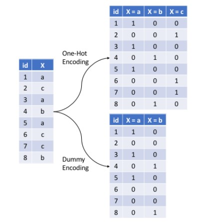

6 Feature Engineering
6.1 The Machine Learning Process
Identify the task, perform preliminary EDA (Exploratory Data Analysis).
Split the data into training and test data.
Perform additional EDA on the training set (graphs, correlation plot, additional checks, etc.)
Perform feature engineering.
Perform CV for hyperparameter tuning and model selection. Choose the optimal model.
Create the final model using the overall training data and estimate its performance on the test data.
6.2 Data Preprocessing and Feature Enginnering
Data preprocessing and engineering techniques generally refer to the addition, deletion, or transformation of data.
We will cover several fundamental and common preprocessing tasks that can potentially significantly improve modeling performance.
Dealing with zero-variance (zv) and/or near-zero variance (nzv) variables
Imputing missing entries
Label encoding ordinal categorical variables
Standardizing (centering and scaling) numeric predictors
Lumping predictors
One-hot/dummy encoding categorical predictors
6.3 Zero-Variance (zv) and/or Near-Zero Variance (nzv) Variables
A rule of thumb for detecting near-zero variance features is:
The fraction of unique values over the sample size is low (say \(\le 10\%\)).
The ratio of the frequency of the most prevalent value to the frequency of the second most prevalent value is large (say \(\ge 20\%\)).
6.4 Imputing Missing Entries
Common imputation techniques:
step_impute_median: used for numeric (especially discrete) variablesstep_impute_mean: used for numeric variablesstep_impute_knn: used for both numeric and categorical variables (computationally expensive)step_impute_mode: used for nominal (having no order) categorical variables
6.5 Label Encoding Ordinal Categorical Variables
Label encoding is a pure numeric conversion of the levels of a categorical variable. If a categorical variable is a factor and it has pre-specified levels then the numeric conversion will be in level order. If no levels are specified, the encoding will be based on alphabetical order.
We should be careful with label encoding unordered categorical features because most models will treat them as ordered numeric features
6.6 Normalizing (centering and scaling) Numeric Predictors
Normalizing features includes centering and scaling so that numeric variables have zero mean and unit variance, which provides a common comparable unit of measure across all the variables.
Before centering and scaling, it is better to remove zv/nzv variables, and perform necessary imputation and label encoding.
6.7 Lumping Predictors
Sometimes features (numerical or categorical) will contain levels that have very few observations (decided by a threshold). It can be beneficial to collapse, or “lump” these into a lesser number of categories.
6.8 One-hot/dummy Encoding Categorical Predictors
6.9 Preprocessing Steps
A suggested order of potential steps that should work for most problems:
Filter out zero or near-zero variance features.
Perform imputation if required.
Label encode ordinal categorical features.
Normalize/Standardize (center and scale) numeric features.
Lump certain features if required.
One-hot or dummy encode categorical features.
6.10 Data Leakage (A Serious, Common Problem)
Data leakage is when information from outside the training data set is used to create the model. Data leakage often occurs when the data preprocessing task is implemented with CV. To minimize this, feature engineering should be done in isolation of each resampling iteration.
6.11 Data Leakage (Example)
KNN Classification: Toy Example
| Obs. | \(X_1\) | \(X_2\) | Y |
|---|---|---|---|
| 1 | 1033 | 1.7 | Red |
| 2 | 1112 | 1.5 | Red |
| 3 | 1500 | 1 | Red |
| 4 | 999 | 1 | Green |
| 5 | 1012 | 1.5 | Green |
| 6 | 1013 | 1 | Red |
| 7 | 1233 | 1 | Green |
| 8 | 1332 | 1 | Red |
Suppose you implement 4-fold CV. Let’s say the folds are randomly chosen to be observation pairs (2, 3), (4, 7), (1, 8), and (5, 6).
6.12 Preprocessing With recipes Package
There are three main steps in creating and applying feature engineering with recipes:
recipe: where you define your feature engineering steps to create your blueprint
prepare: estimate feature engineering parameters based on training data
bake: apply the blueprint to data